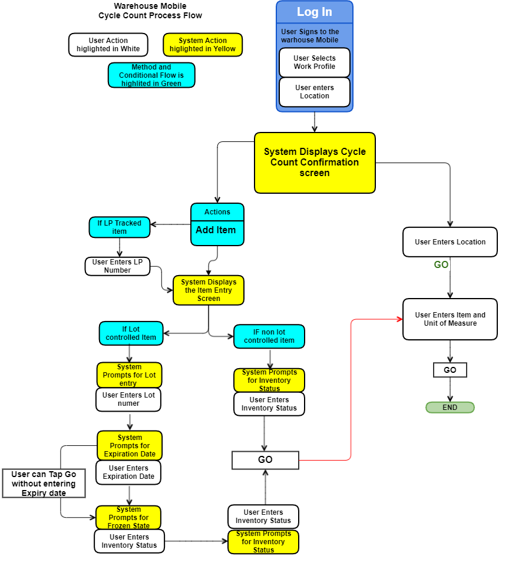

Warehouse Mobile - Cycle Count Work
Cycle counting is the physical verification that the inventory present in a location matches what the system believes is in the location. This helps you keep a correct count of exactly how much inventory is present in your warehouse.
Related Topics...
Warehouse Mobile screens
Topics Discussed
Confirming Cycle Counts
Cycle Count Flow
Confirming Cycle Counts
The following procedures are for executing cycle count work for
both plan-based cycle counting.

1. Log on to Warehouse Mobile application.
2. Choose a work profile that supports executing cycle count work.
3. The system will display the appropriate work execution processing screen based on user or system directed method.
- Selecting a user-directed work profile, will require entering a work unit.
- Selecting a system-directed work profile, will require entering a location.
4. Next, the system will display the cycle count confirmation screen.
- Review Item, Quantity and Location information - In the confirmation screen tap icon to view the detailed information screen.
- Location - Location information screen details such as Location, On hand, Allocated and In Transit is displayed.
- Item - Item identifier, Description, quantity and Item image is displayed.
- System Quantity - The quantity and Converted Quantity information is displayed.
5. Enter the item quantity (and UM) that are currently present in the location of the item you are counting. The type of count you will be required to make is determined by how your work special handling record's cycle counting settings are defined.
- Unit of Measure Field represents the conversion quantity. The quantity counted will be a multiple of this conversion quantity. The highest evenly divisible unit of measure will be defaulted for the system quantity unit of measure. If the system quantity is not evenly divisible, then the quantity in base unit of measure will be shown.
- If you are counting a non-LP-tracked location, the system will require you to count the item quantity.
- You can configure to setup check digits, item, location and license plate verification using the work special handling.
- Verifying bad count: If cycle count preference is set to verify bad count. If the user enters a count value different from the system computed, then system prompt the user with message for selection. Click Yes, to confirm user entered count.
Work Special Handling Configuration (quantity)
- The quantity verification is done during cycle count if the work special handling configuration is enabled.
When Counting the Item Quantity of an LP-Tracked Location
- In system-initiated LP mode, the system will display the license plate to be counted. Then the user will need to enter the quantity of the item in the license plate.
- In user-initated LP mode, the system will prompt the user to scan/enter the license plate. The work special handling will have the standard count and user-intitated is selected.
When Counting an Empty Location
- The user will have the same options as in the "not empty" scenarios listed above
6. Add Item
User can add items that are found at location and were not recorded in the system.
Add Item from:
- Cycle Count Confirmation screen - Add items when you have started the cycle count work from a location.
- Cycle Count Done action menu- Add items when you have completed counting the items at a location and moved to done screen. Tap Action >> Add item, system will re navigate to the user Cycle Count confirmation screen.
Note: User needs Add New Item security to add items.
The items can be added in the following conditions
Add item at location - Enables user to add items at a location that are not recorded in the system.
- Tap Action >>Add items. In the Add Items screen, enter item and quantity and tap Go. In case the item has company associated, the user can select the company. The company list is based on Warehouse and company authorization.
- The inventory status of the added item quantity is set to suspense, and redirected to cycle count screen. Continue the confirmation process for the added item from the cycle count confirmation screen.
Add item at license plate tracked location -User can add an item at location tracked by a license plate.
- Navigate Action >>Add items. System will prompt user to enter the license plate number and tap Go.
- Enter the item and quantity details and tap Go.
Add a lot controlled Item
- When a lot controlled item is added, the system prompts user to enter Lot, Expiry Date, Frozen and inventory status.
- When entering an existing lot, the expiration date is defaulted and also highlighted.
- If entered lot in frozen state, system will prompt for the quantity and the expiration date, Frozen state as Yes and frozen inventory status is populated.
- Tap Go and system will highlight and prompt to select the Frozen state as Yes or No. If you select No, then system will prompt for Inventory Status field.
- If Frozen state is Yes, then system will default the frozen inventory status.
Add item using cross reference.
When an item cross reference is entered in place of the item, the system will display all the items linked to the cross reference. The multiple items are displayed in slider and user can swipe to select the required item to be added.
Add Item with Inventory Attributes
The system will prompt user to add inventory attributes if the exit point ’WM Capture inventory attributes’ is turned on. If not then system will not show the inventory attributes screen during adding an item.
During add item flow the system will prompt you to enter the Inventory Attributes 1-9. Optionally Tap Actions >> Done to skip all the attributes field.
Enter the Quantity to be added. Tap Go to add the item.
Confirm Lot Update
The confirm lot update screen is displays, in following scenarios
- When the expiration date is changed for existing lot.
- When inventory status is changed from Frozen to Unfrozen state.
- When the Frozen state from No to Yes.
When you change the expiration date or Frozen inventory status, system prompts for the Confirm lot update screen to verify the changes. The Confirm lot update screen displays the Lot, item, description, company, warehouse, before expiration date, after expiration date, before inventory state and After inventory state, affected location and affected containers.
Serial Numbers
The serial number tracked item enables user to scan serial numbers based on the check in quantity.
- For one unit quantity, system will prompt you to enter the serial number only once.
- For multiple quantity, system will prompt for the serial numbers for all item quantity entered. System validates for unique serial numbers and duplicate serial numbers are not allowed.
- Serial number entry is automatically validated by the system. The Go button is disabled when we have a duplicate serial number entered
- System will validate the serial number tracked items that are linked to serial number templates
License Plates
Users can perform a standard cycle count with user initiated LP selection method.
-
Scan or enter the location you want to cycle count and the system will prompt you to enter the license plate number. If you are counting an existing license plate, enter the same LP number. If you are adding a new license plate to a single item location, enter a new number and the system will default the item for the location.
-
If you are adding a new license plate using the Add item action, the system will prompt you to enter the license plate number, item number, company, lot number, and quantity.
Cancel Add Item - The process of adding an item can be canceled by navigating to Actions >> Cancel. When selected it stops the Add item process and navigates back to cycle count confirmation screen. This Cancel action is available for the Lot, Expiry date, Frozen and Inventory Status field selection and validation.
7. The following actions can be performed
- GO:Tap to confirm the item quantity that you are counting at the location.
- SKIP: Tap to ignore the current cycle count request and advance to the next one (if one is available)
- CANCEL :Tap to stop processing on this cycle count work
unit.
- DONE :Tap done to complete the cycle count and move to the next cycle count location in the work unit. Done action results in scenarios when:
- Single Item Location: Once the cycle count for a particular location is complete, tap Action Menu >> Done. The cycle count screen will display the next location in the work unit.
- Multiple - Item Location: Once the cycle count for a particular location is complete, tap Action Menu >> Done, system will prompt user with unconfirmed counts may be removed from the location. Do you wish to continue?. Tap Yes, to close the unconfirmed counts for the location and move to next cycle count location in the work unit.
8. When you are finished confirming all the cycle counts on the current work unit, the system will return you to the work profile initiation screen.
Cycle Count Flow
Cycle Count Steps - User Directed
User Directed cycle count steps as below
- Tap Work Execution to view Select Work Profile screen.
- Select the work profile.
- Enter or scan the Work unit and the Cycle Count screen is displayed.
- Enter value in Quantity field. This value will be populated corresponding to Quantity label in the screen.(Label gets highlighted).
- Tap Go. Cycle count will be confirmed based on validation of the entered quantity is equal to, more than tolerance limit of the system quantity.
Cycle Count Steps - System Directed
User Directed cycle count steps as below
- Tap Work Execution to view Select Work Profile screen.
- Select the work profile.
- Enter or scan the Location and the Cycle Count screen is displayed.
- Enter value in Quantity field. This value will be populated corresponding to Quantity label in the screen.(Label gets highlighted).
- Tap Go. Cycle count will be confirmed based on validation of the entered quantity is equal to, more than tolerance limit of the system quantity.
Cycle Count Using Converted Unit of Measure
Confirm the cycle count using converted UOM.
- Tap Work Execution to view Select Work Profile screen.
- Select the work profile.
- Enter or scan the Work unit and the Cycle Count screen is displayed.
- Tap UM to view the list of UM associated with the Item.
- Enter the value in Quantity field.
- Tap Go and cycle count will be confirmed based on the new UOM selected.
Cycle Count - Add Item
Add Item during cycle count process.
- Tap Work Execution to view Select Work Profile screen.
- Select the work profile.
- Enter or scan the Location to view the Cycle Count screen.
- Tap Actions >> Add Item. The last location of the cycle count is displayed in the Location field.
- In case the location is tracked by license plate, system will prompt user to enter the License Plate number.
- Enter License Plate number and tap Go.
- Enter Item and company details and tap Go.
- The system will prompt user to add inventory attributes if the exit point ’WM Capture inventory attributes’ is turned on.
- The system will prompt user if its:
- lot controlled item
- Enter Lot and tap Go.
- Expiration Date
- Enter the Expiration Date and tap Go. Optionally users can also Tap Go without entering the date.
- Frozen State
- The system will prompt the frozen field. Select the Yes or No. By default system will have No selected. Select Yes to default the frozen inventory status to the inventory status page.
- Inventory Status
- Select the inventory status and tap Go.
- non-lot controlled item
- Enter the Inventory Status and tap Go. The inventory status that is configured in the inventory control value is populated.
- Select the inventory Status and tap Go.
- Enter the value in Quantity and Unit of Measure and tap Go.
- The items are added based on the tolerance level configuration set in the cycle count preference.
Add Item with Inventory Attributes - The system will prompt user to add inventory attributes if the exit point WM Capture inventory attributes is turned on. If not then system will not show the inventory attributes screen during adding an item.